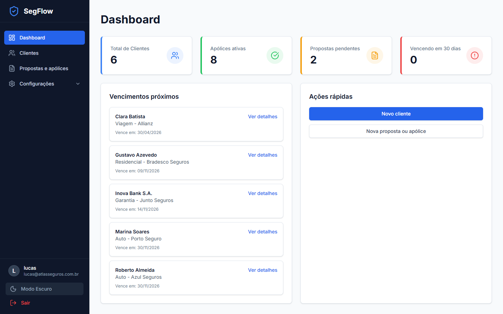
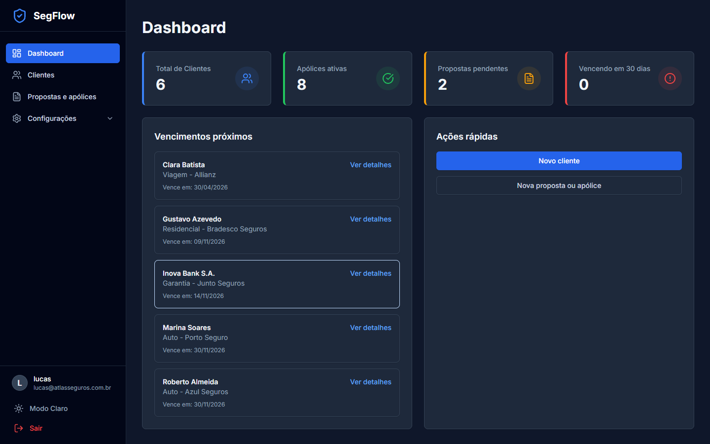
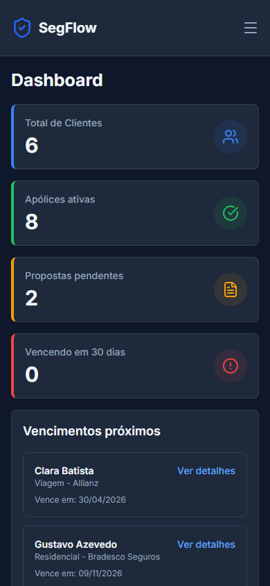
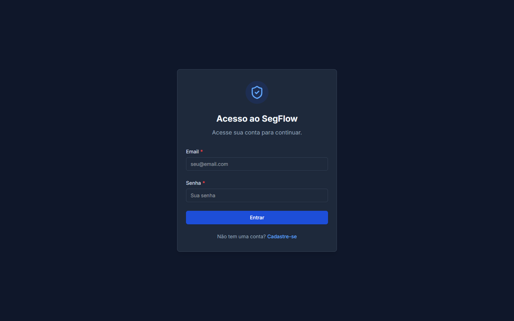
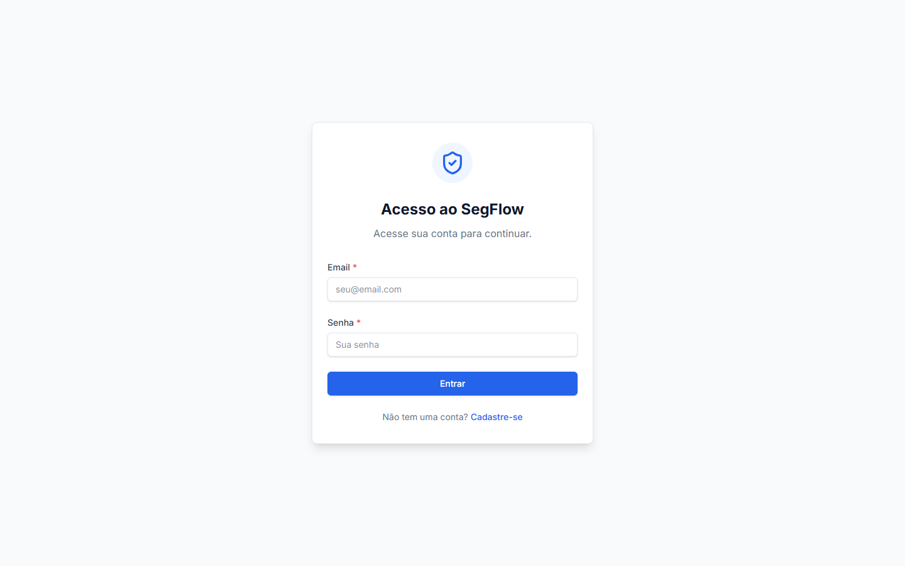

I had the repository and the idea, but time was always the bottleneck. With Cursor IDE, what seemed weeks away took just 2 days — a full management system with authentication, dashboards, forms, and production-level quality.
"Every feature, every component, every test — generated and refined by AI. Cursor was not just a tool, it was the ultimate development partner."
— Built with Cursor Agent Mode, Multi-Agents, Rules, Skills, and MCP Servers
Every screen was designed with attention to UX, accessibility, and responsiveness.

Modern technologies chosen for performance, DX, and maintainability.
Layered backend with clear separation of responsibilities.
Complete design system with CSS tokens for both themes — no workarounds.
Every screen adapted for mobile with optimized cards, navigation, and forms.

Professional security and code quality standards throughout the application.
Access + Refresh tokens with automatic rotation. httpOnly cookies. Rate limiting on auth routes.
Validation schemas on all inputs. Centralized middleware. Mass assignment protection.
Continuous static analysis. Zero bugs, zero vulnerabilities. Quality Gate integrated into the pipeline.
Parameterized queries. IDOR protection via broker_id. Log sanitization against injection.
CSS tokens, CVA for variants, cn() for composition. Accessible components with vitest-axe.
Unit, integration, functional, and security tests. Controllers, use cases, and React components covered.
Every Cursor feature was pushed to its limits to build this project.
Complete features built autonomously with multi-agent orchestration. Sub-agents handle focused subtasks in parallel — from database modeling to React components with tests, all coordinated seamlessly.
Dedicated review mode that analyzes code changes, identifies potential issues, and suggests improvements — an AI code reviewer embedded in the development workflow.
Persistent rules that teach the AI about project conventions: design system tokens, centralized messages, form patterns, backend architecture, security standards, and more.
17 specialized skills functioning as development guides, loaded on demand. Each skill provides deep domain expertise the agent follows as reference.
Strategic model selection — Auto mode for intelligent routing, Opus for development and long contexts, Gemini for text review and documentation. Always using the latest available versions for optimal results.
Model Context Protocol integrates Cursor directly with GitHub, SonarCloud, and Browser tools. Also instrumental in environment setup — configuring MCPs, libraries, Docker, and development tooling.
Complementary Google AI code agent. Analyzes the repository, suggests fixes, and generates patches. Integrated via REST API for pending issue verification.
Read-only collaborative mode for designing approaches before coding. Essential for cross-cutting reviews involving the entire project context — frontend, backend, database, and tests analyzed together before any change.
Systematic troubleshooting mode for investigating bugs and failures with runtime evidence. Follows a structured approach: reproduce, isolate, hypothesize, and fix — before proposing any change.
Contextual autocomplete that understands the entire project. Conversational code generation — from UI components to complex SQL queries.
This very showcase page was built entirely by Cursor in a single prompt. It used MCP tools to read the directory, capture component structures, process images, and generate the complete HTML/Tailwind implementation.
Brokerage registration, secure login, and full access control.

